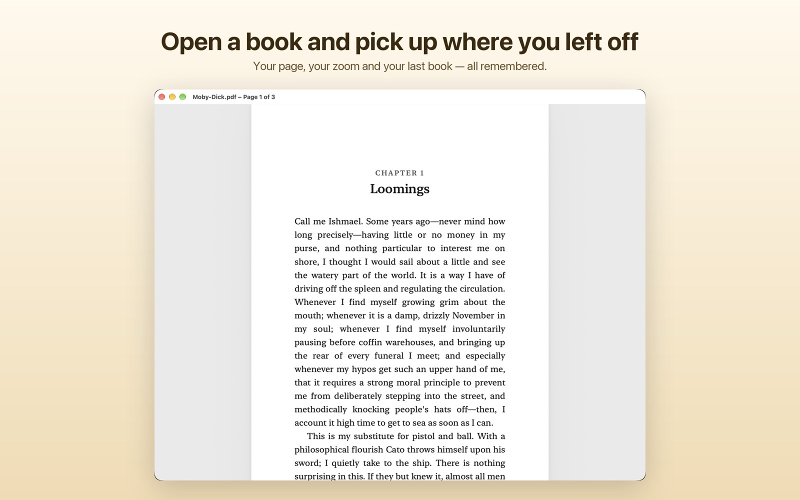
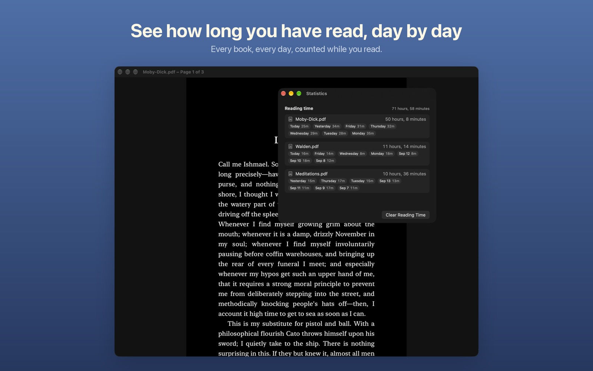
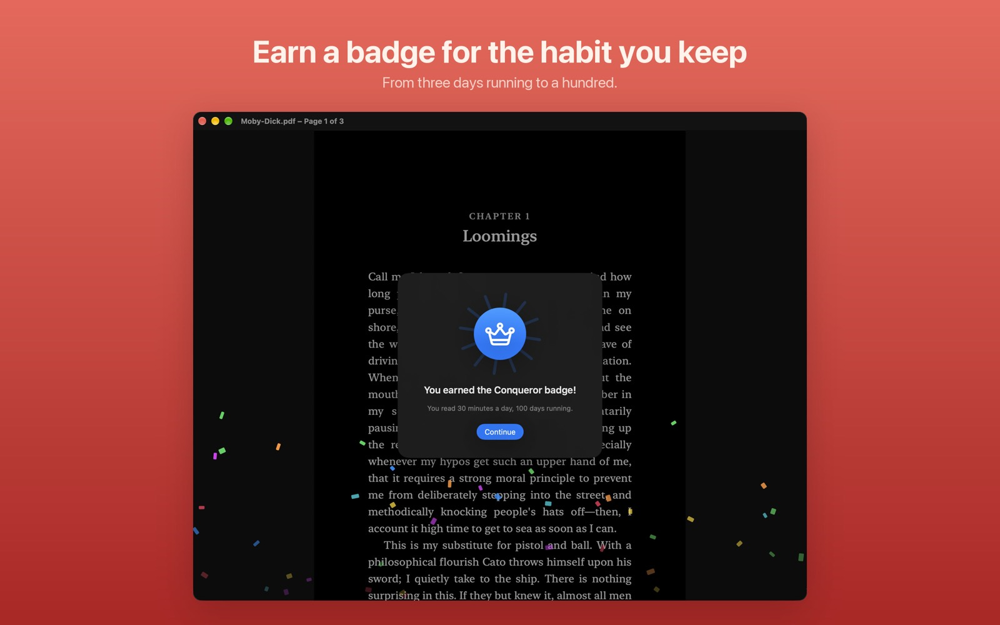
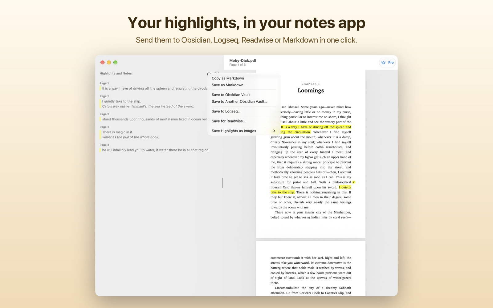
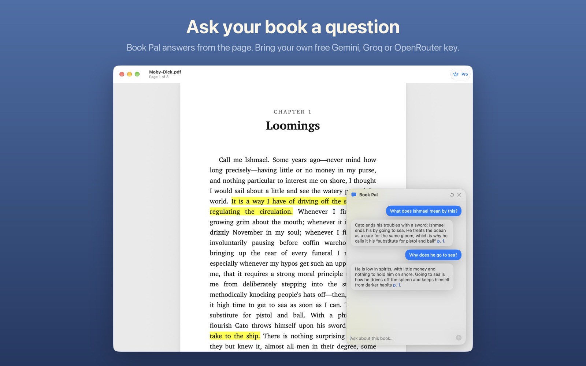
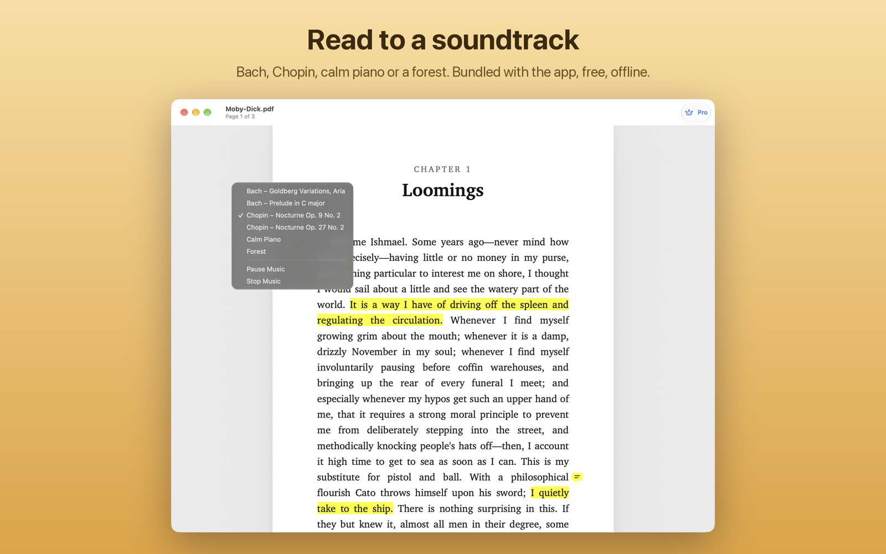

Book Conqueror
// new · macOS · free
Make reading immersive.
A calm, distraction-free PDF reader for your Mac. Reading goals, streaks and statistics help make books a habit. Reading and exporting highlights are free, there's no account to create, and your books stay on your Mac.
- 🔥Goals, streaks & achievements
- 📊Per-book & daily statistics
- ✍️Export to Obsidian, Logseq, Readwise
- 🖼️Highlights as quote cards
- 🎹Focus music: Bach, Chopin
- 🤖Book Pal, an AI reading buddy
- 🔊Read aloud
- 😴"Awake check" while you read
Requires macOS 14 Sonoma or later · Turkish readers can get it as
Kitap Fatihi





